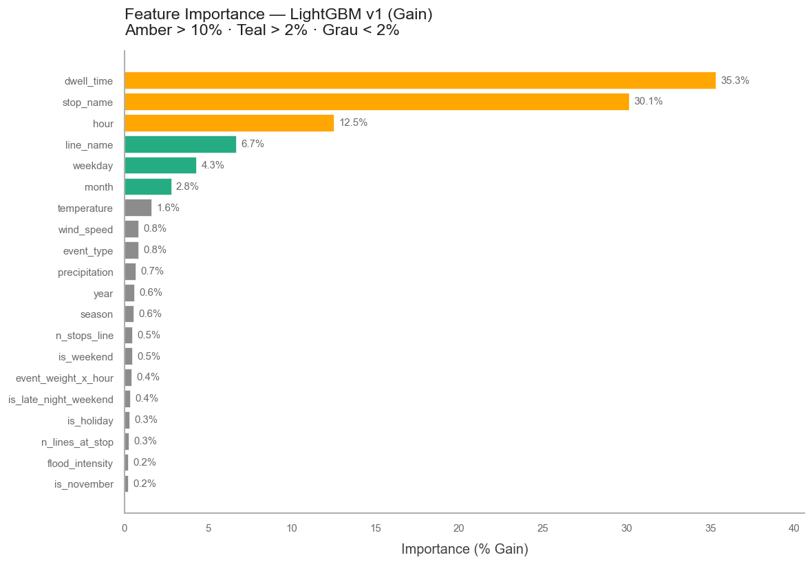

Das Projekt als End-to-End ML Case
Data Engineering · EDA · Feature Engineering · LightGBM
87 % OTP seit drei Jahren — dauerhaft unter dem VBZ-Ziel von 95 %
Von der Ursachenanalyse zur Vorhersage
Temporal · Räumlich · Netzwerk · Meteorologie · Events · Zieldefinition
Folgen sie Mustern, die ein Modell lernen kann? — LightGBM, MAE 18,56 s (arrival_delay in Sekunden), −63 % vs. Baseline
Primärquellen: VBZ IST-Daten und GTFS-Fahrplan
Kontextquellen: Wetter und Grossveranstaltungen
Cleaning-Entscheidungen und ihre Begründungen (1/2)
Cleaning-Entscheidungen und ihre Begründungen (2/2)
Stop Mean als sinnvollster naiver Benchmark
| Ansatz | Logik | MAE (Test) |
|---|---|---|
| Grand Mean | Immer Netz-Ø vorhersagen (56,3 s) | 50,6 s |
| Hour Mean | Ø nach Tagesstunde | 50,5 s |
| Line Mean | Ø nach Linie | 50,4 s |
| Stop Mean | Ø nach Haltestelle (stärkste naive Baseline) | 50,0 s |
Stop Mean gewinnt, weil Haltestellen strukturell unterschiedliche Delay-Level haben. Jedes Modell muss diesen Benchmark schlagen. Grand Mean, Hour Mean und Line Mean liegen alle < 1s voneinander entfernt — reine Mittelwert-Strategien bringen keinen Vorteil.
32 Features v1, 34 Features v2 — der entscheidende Unterschied
Warum LightGBM (1/2)
Warum kein Hyperparameter-Tuning (2/2)
v1 zu v2: der Sprung kam aus der Analyse, nicht aus dem Algorithmus
| Version | Neue Features | MAE (Test) | MBE (Test) | OTP-Verbesserung |
|---|---|---|---|---|
| Baseline (Stop Mean) | — | 50,0 s | — | — |
| LightGBM v1 | 32 Features (Zeit · Wetter · Netz) | 45,7 s | +8,3 s | 71,9 % → 77,5 % |
| LightGBM v2 | +prev_trip_delay, +stop_sequence_pct (34 total) | 18,56 s | −0,69 s | → kalibriert |
v1 war systematisch zu optimistisch (MBE +8,3 s) — v2 kalibriert auf MBE −0,69 s. Der Sprung auf 18,56 s MAE (−63 %) erklärt sich vollständig durch prev_trip_delay.
XGBoost-Vergleich und Stabilitätsprüfung
XGBoost erreicht auf dem Validation-Set vergleichbare Qualität, braucht aber 5× mehr Zeit. Für iteratives Feature Engineering über mehrere Wochen ist LightGBM die klar überlegene Wahl. Das ist eine Workflow-Entscheidung, keine Qualitätskompromittierung.
prev_trip_delay dominiert — die Analyse hat recht behalten

Die Kaskadenanalyse (r ≥ 0,85 netzweit) hat die Feature-Wichtigkeit korrekt antizipiert. Das Modell bestätigt: Das Signal steckt in den Daten, nicht im Algorithmus.
Was produktionsreif ist (1/2)
Was offen bleibt (2/2)
Jede Empfehlung ist direkt durch einen Befund aus der Analyse gedeckt
Dashboard-Exploration offenbarte 7 systematische Forschungsmöglichkeiten
Beim interaktiven Erkunden der 16 Linien entstehen neue Fragen: Warum sind Fahrtrichtungen asymmetrisch? Welche Linien dämpfen Delays, welche verstärken sie? Diese Ad-hoc-Entdeckungen sind Signale für strukturelle Potenziale.
Kay Wiegand · 2023–2025